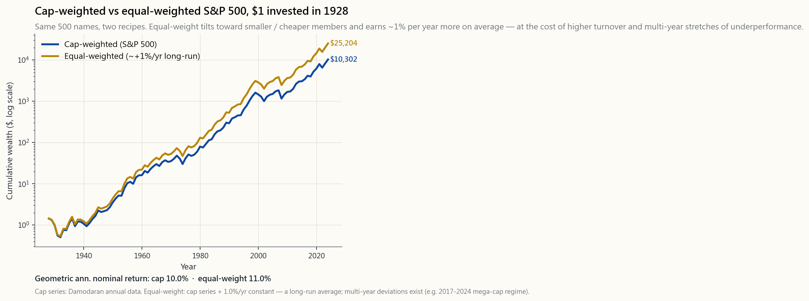
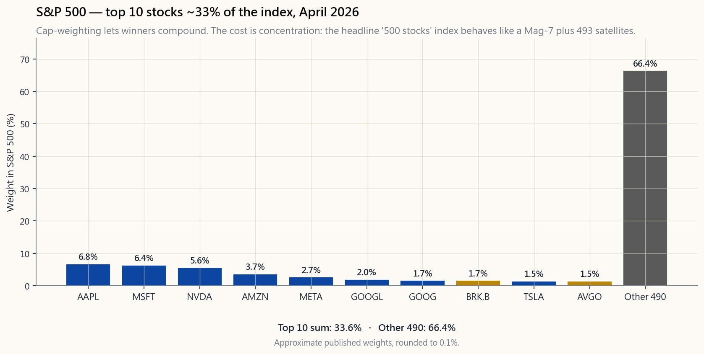

Week 9: Market Indexes — How the Scoreboard Is Built
1. Why This Is Important
Every business newscast frames the day in index points. "The S&P 500 was up half a percent. The Russell 2000 was down 1%. Tech led on the Nasdaq 100." Those four or five numbers tell millions of investors how their portfolios "did" — without anyone explaining what an index actually is. An index is not a market. It is a recipe: which stocks to include, how much each one counts, and when to swap names in and out. Two recipes pulling from the same kitchen can produce wildly different dishes.
There are four reasons every adult investor should be index-literate.
This week is the box.
2. What You Need to Know
2.1 Three Weighting Schemes — One Universe, Three Different Indexes
The single most important design choice in any index is how it weights its members. The same 30 stocks can produce three very different index series.
- Price-weighted. Each stock's weight is its share price divided by the sum of share prices. The Dow Jones Industrial Average is the only major index still built this way. A $400 stock counts ten times more than a $40 stock, even if the $40 stock is a much larger company. Splits, buybacks, and the choice of nominal share price (which is a marketing decision, not an economic one) all distort the result.
- Cap-weighted. Each stock's weight is its float-adjusted market cap divided by the index's total. This is the S&P 500, the Nasdaq Composite, the Russell 1000 / 2000 / 3000, the MSCI ACWI — essentially every index that runs a real fund business. The logic is sound: if NVIDIA is worth $3 trillion and a small industrial is worth $30 billion, NVIDIA represents a hundred times more of the equity-economy and should have a hundred times the weight. The cost is concentration. By April 2026, the top 10 names in the S&P 500 sum to about 33% of the index, and the Magnificent Seven alone are over 30%. You are not buying "500 stocks" in any meaningful sense; you are buying seven stocks plus 493 satellites.
- Equal-weighted. Every member gets
1/Nweight on rebalance day. The S&P 500 Equal-Weight Index (tracked by the RSP ETF) is the canonical version. Equal-weight automatically tilts toward smaller and cheaper names, since the largest names are dragged down to 0.2% and the smallest are pushed up to 0.2%. Over very long horizons it has out-earned the cap-weighted version by roughly 0–2% per year, but at the cost of more turnover, more tax drag in a taxable account, and meaningful periods of underperformance (notably 2017–2024, when mega-cap tech crushed everything else).
image/week09_cap_vs_equal.png. Both lines climb. Equal-weight ends a little higher. Neither dominates in every decade.

2.2 The Mag-7 Concentration Problem
In April 2026 the S&P 500's top ten weights look approximately like this:
- Apple ~6.8%
- Microsoft ~6.4%
- NVIDIA ~5.6%
- Amazon ~3.7%
- Meta ~2.7%
- Alphabet (GOOGL+GOOG) ~3.7% combined
- Berkshire Hathaway ~1.7%
- Tesla ~1.5%
- Broadcom ~1.5%
image/week09_top_concentration.png shows the shape: a steep cliff for the top 10, then 490 stocks splitting the remaining two-thirds.

This is not automatically a problem. It is the index doing exactly what cap-weighting tells it to do: let winners compound. But it has three practical consequences.
2.3 Free-Float Adjustment — Why "Market Cap" Isn't Quite Market Cap
Every modern cap-weighted index uses the float-adjusted market cap, not the total market cap. Float is the count of shares actually available to public trading — total shares outstanding minus blocks held by founders, governments, parent companies, and other strategic holders.
A few examples, April 2026 estimates:
- Meta has two share classes; Class A has ~99% float, but Mark Zuckerberg's super-voting Class B is locked up. The S&P uses Class A only.
- Alphabet's GOOGL (Class A) and GOOG (Class C) trade publicly; the Class B held by founders is excluded. The two listed classes are both in the index.
- Berkshire Hathaway's float adjustment trims the index weight by a few hundred basis points relative to its total market cap, because Buffett's holdings are not deemed available.
2.4 The Russell Reconstitution — A Real Trading Day
The Russell index family (Russell 3000 / 1000 / 2000) reconstitutes once a year, on the last Friday of June. The cutoff for which company sits in which size bucket is rank order on the prior May 31, with a buffer band to limit churn. Between the buffer-day announcement (mid-June) and the Friday close, two things happen:
This is the largest scheduled trading event in U.S. equities. It is also one of the cleanest examples of "irrational > solvent": the price moves are mechanical, but they can persist for weeks because shorting them costs borrow fees and mark-to-market pain. The S&P 500's quarterly rebalances and the Nasdaq 100's annual rebalance are smaller but rhyme.
2.5 Survivorship Bias — What the Index Throws Away
Indexes silently drop names. A company that goes bankrupt, gets acquired, or falls below the size threshold is removed; a fresh name takes its slot. The historical index series — what you see in the chart books — is a series of survivors plus replacements. The dead stocks are gone.
For long-run return claims this matters more than people realise:
- The "stocks return 9–10% per year since 1928" headline already excludes the railroads that vanished in the 1930s, the conglomerates that imploded in the 1970s, and Enron, WorldCom, Lehman, GE-as-was. Their full drawdowns are in the historical record but their post-failure performance (zero) is not blended into a "what if I had bought everything in 1928" series.
- Empirical studies put the survivorship overstatement at roughly 1–2% per year for the longest-running indexes. The Damodaran dataset used in Week 3 already corrects for this on the broad-market level, which is why its returns are a little lower than the S&P-500-since-inception headline.
- For individual stock-picking decisions, the bias is much worse. A "buy what worked in 2000–2010" strategy back-tested on today's index members will look heroic, because the actual losers from that decade aren't in the test universe at all.
2.6 The Big Indexes — A Field Guide
- S&P 500. ~500 large-cap U.S. companies, committee-selected on profitability and float thresholds, float-adjusted cap-weighted, quarterly rebalance. Roughly 80% of U.S. investable equity by market value. Tracked by VOO (Vanguard, 0.03% expense ratio), SPY (State Street, 0.0945%), IVV (BlackRock, 0.03%). The default U.S. equity exposure.
- S&P 500 Equal Weight. Same 500 names, equal weights, rebalanced quarterly. RSP (Invesco, 0.20% expense ratio). About 7× the turnover of the cap-weighted version, which translates to a small but real tax drag in a taxable account.
- Russell 2000. The 2,000 stocks ranked roughly 1,001–3,000 by U.S. market cap. The canonical small-cap benchmark. IWM (BlackRock, 0.19%) is the main vehicle. Earnings quality is dramatically lower than the S&P 500 — a sizable share of Russell 2000 companies have negative net income — which is partly why small-cap returns have lagged large-cap since 2014.
- Nasdaq 100. The 100 largest non-financial Nasdaq-listed stocks, modified-cap-weighted with a re-weighting rule that caps individual names so a single stock cannot drift past ~24%. QQQ (Invesco, 0.20%). Heavily tech-tilted, but it is not a tech index; it is a Nasdaq-listing index.
- Dow Jones Industrial Average. 30 stocks, price-weighted, committee-selected. Cultural artifact more than a serious benchmark. DIA (State Street, 0.16%). Not recommended as a portfolio building block.
- MSCI ACWI. ~3,000 large- and mid-cap stocks across 47 developed and emerging markets, float-adjusted cap-weighted. ACWI (BlackRock, 0.32%) is the main ETF. Caveat: for a Hong Kong / Mainland China reader of this course, the only investable slice of ACWI is the ~60% U.S. weight plus the developed-non-U.S. component you can hold via the ETF. Direct exposure to A-shares, mainland developers, and most EM-listed names is either capital-controlled or operationally hostile. The course's default is to overweight U.S.-listed exposure, hold ACWI as a small diversifier if at all, and not try to engineer a "global cap-weighted" portfolio that the plumbing won't actually deliver.
2.7 Index Futures — The Liquid Truth
If you want to know where the index "really is" between cash-market opens, look at the front-month futures: ES (E-mini S&P 500), NQ (E-mini Nasdaq 100), RTY (E-mini Russell 2000), YM (E-mini Dow). They trade roughly 23 hours a day at tens of billions of notional. ETFs can trade away from net asset value briefly during stress; futures cannot drift far from the index without arbitrage closing the gap.
For a long-term reader, the reason to know this is not to trade futures (you almost certainly should not). It is to understand that:
- Pre-market price moves quoted on financial TV are usually the front-month future, not the index.
- During a crisis (March 2020, August 2024), the futures often print prices that the cash ETFs only catch up to at the next open. The futures are not lying — they are just open while the underlying is closed.
- For very large allocations (institutional scale), futures plus T-bills are often a cheaper way to hold S&P 500 exposure than holding SPY, because the financing rate embedded in the future is sometimes below the all-in cost of the ETF. The tax-via-options/margin angle sits on the same hook.
2.8 Build Your Own Index — Try the Interactive
The interactive demo for this lesson, interactive/week09_index_builder.html, is a sandbox. It gives you 30 representative S&P 500 components with realistic prices, share counts, and trailing 12-month returns. You toggle between cap-weighted, equal-weighted, and price-weighted, and watch:
- the composition pie redraw (concentrated for cap, flat for equal, price-distorted for price-weighted), and
- the 12-month index return recompute.
3. Common Misconceptions
4. Q&A Section
Q1. Should I own RSP instead of VOO to avoid the Mag-7 concentration? A. Probably not the whole sleeve. A common compromise is 70–80% VOO plus 20–30% RSP, which trims your top-10 concentration from ~33% toward ~25% without giving up the natural cap-weighted compounding. RSP also has 7× the turnover and an extra 17 bps of expense ratio. In a tax-deferred account the cost is small; in a taxable account it eats into the diversification benefit.
Q2. Why do active managers struggle to beat the S&P 500? A. Three structural reasons. First, fees: average large-cap active is ~70 bps versus 3 bps for VOO, so the manager is starting 67 bps behind every year. Second, the index's cap-weighting lets winners compound automatically; managers tend to trim winners (rebalancing discipline) and reinvest in laggards, which underperforms in trending markets. Third, the index does not pay capital gains taxes; the active fund's turnover does. Compounded over fifteen years, the gap is enormous.
Q3. What happened to "the next Apple" stocks that didn't make it? A. They left the index. Polaroid, Eastman Kodak, Sears, Lehman, GE (downsized out), Bear Stearns, MCI, Enron, WorldCom, Pacific Gas (in and out), AIG (in 2004, out in 2008, back later) — every one of those was once a multi-percent S&P 500 weight. Their losses are reflected in the historical series only up to the day they left. After that, the slot is taken by a fresher name and the dead one's continued zero is not in the line.
Q4. Can I invest directly in the S&P 500 itself? A. No. The index is a calculation. You can buy ETFs (VOO, SPY, IVV) that hold the underlying stocks, mutual funds that track the index (VFIAX), or futures (ES) that settle to the index. All three are wrappers around the same recipe; the wrapper you choose is a fee, tax, and access decision.
Q5. How does the S&P 500 committee decide additions? A. Eligibility rules — U.S. domicile, market cap above the floor (~$18 billion in April 2026), at least four consecutive quarters of GAAP profit, public float ≥ 50% — get you onto the candidate list. From there the committee picks based on sector balance and replacement need (a deletion creates the slot). The committee's discretion is the reason Tesla took years longer than expected to be added, and is the reason the Nasdaq Composite (rules-based on listing exchange) and Russell 1000 (pure market-cap ranking) move differently from the S&P at the margin.
Q6. Why isn't the Hang Seng Index in this lesson? A. The investable-universe constraint. For a Hong Kong / mainland reader of this course, Hang Seng exposure via 2800.HK is technically holdable, but the underlying is dominated by mainland-listed banks and developers whose accounting and political risk are categorically different from anything U.S. investors price. The course's stance is: if you live in HK, buy a small Hang Seng tracker for currency-of-spending hedging, but do not pretend it is a substitute for the U.S. index. The S&P 500 is the engine; HK exposure is hedging the gas tank.
Q7. What is the Mag-7 weight likely to be in five years? A. Nobody knows, and that is the honest answer. Two historical analogies: the Nifty Fifty top weight peaked in 1972 at a similar concentration and was cut roughly in half by 1974–75; the dot-com mega-caps peaked in early 2000 and the index spent a decade rotating into other names. Both unwinds were painful. A third possibility — the one cap-weighting bets on — is that AI productivity gains keep these companies' earnings growth ahead of the rest of the index, in which case the concentration grows. Hold both VOO and RSP if you don't want to bet on which.
Q8. How do I benchmark a 60/40 portfolio? A. The cleanest benchmark is 60% VTI (or VOO) and 40% AGG (or BND), rebalanced quarterly. You compute that benchmark's return, then compare to your actual portfolio. If you want to be more sophisticated, blend in a small International allocation (5–15% of the equity sleeve via ACWX) to match what you actually hold. Comparing a 60/40 against 100% S&P will make you feel terrible in good equity years and falsely heroic in bad ones; that is the wrong benchmark.
Q9. Why don't professional traders just trade the Russell rebalance? A. They do, and the trade is well-known enough that the easy money has been arbitraged out. The remaining risk premium is for taking bidirectional inventory (you don't know exactly which names will be added until two weeks before, and you carry borrow costs to short the deletions). Hedge funds with the right infrastructure still earn a few hundred basis points a year on this — but they pay for it with risk and complexity that retail traders cannot replicate.
Q10. What is the single most important index for me to understand? A. The S&P 500. It is the benchmark for ~$11 trillion of U.S. equity capital, the default in every 401(k), the comparison every active fund is judged against, and the cleanest expression of the alpha-is-rare principle: own the index, accept the market return, and spend your scarce decision budget elsewhere — on the four tranches, on tax structure, on not panicking. Everything else in this lesson is texture around that core fact.
第九週：市場指數——計分板是如何建構的
1. 為何這個議題至關重要
每一個財經新聞報道都以指數點數來概括當天的市況。「標普500指數上升半個百分點。羅素2000指數下跌百分之一。納斯達克100指數由科技股帶領上揚。」就是這四五個數字，讓數以百萬計的投資者知道自己的投資組合「表現如何」——但從來沒有人解釋指數究竟是什麼。指數並不等同於市場，它是一份食譜：哪些股票納入、每隻股票佔多少比重、何時換入換出成分股。兩份從同一個廚房取材的食譜，可以烹調出截然不同的菜式。
每一位成年投資者都應該對指數有充分認識，原因有四。
本週，我們就來打開這個箱子。
2. 你需要掌握的知識
2.1 三種加權方式——同一成分，三種不同指數
任何指數在設計上最重要的選擇，就是如何為成分股加權。同樣的30隻股票，可以構成三種截然不同的指數系列。
- 價格加權。 每隻股票的權重，等於其股價除以所有成分股股價之和。道瓊斯工業平均指數是目前唯一仍採用此方式的主要指數。一隻400美元的股票，其權重是40美元股票的十倍，即使後者的市值遠大於前者。股票拆細、股份回購以及名義股價的選擇（這是市場推廣決策，而非經濟決策），都會扭曲結果。
- 市值加權。 每隻股票的權重，等於其流通量調整後市值佔指數總市值的比例。標普500指數、納斯達克綜合指數、羅素1000/2000/3000指數、MSCI全球股票市場指數（ACWI）——幾乎每一個運營真實基金業務的指數，都採用這種方式。其邏輯合理：若英偉達的市值為3萬億美元，而一家小型工業股的市值為300億美元，英偉達在股票經濟體中所代表的份量是後者的百倍，理應擁有百倍的權重。代價是集中度。截至2026年4月，標普500指數前十大成分股合計佔指數約33%，「七巨頭」單獨佔比逾30%。你買入的並非任何有意義上的「500隻股票」；你買的是七隻股票，加上493隻衛星股。
- 等權重。 在再平衡日，每隻成分股均獲分配
1/N的權重。標普500等權重指數（由RSP交易所買賣基金追蹤）是其中最具代表性的版本。等權重自動傾向規模較小、估值較低的股份，因為最大型的股份被壓低至0.2%，而最小型的股份則被拉升至0.2%。在極長的時間跨度內，其回報略高於市值加權版本，每年大約高出0至2%，但代價是更頻繁的換倉、應稅帳戶中更高的稅務拖累，以及較長時期的跑輸表現（尤其是2017至2024年，超大型科技股全面壓倒其他板塊）。
image/week09_cap_vs_equal.png。兩條線均呈上升趨勢，等權重版本的終值略高，但在任何單一年代均非絕對佔優。
2.2 七巨頭集中度問題
2026年4月，標普500指數的前十大成分股權重大致如下：
- 蘋果 約6.8%
- 微軟 約6.4%
- 英偉達 約5.6%
- 亞馬遜 約3.7%
- Meta 約2.7%
- Alphabet（GOOGL+GOOG）合計約3.7%
- 伯克希爾哈撒韋 約1.7%
- 特斯拉 約1.5%
- 博通 約1.5%
image/week09_top_concentration.png的長條圖呈現了這一形態：前十大成分股佔比急劇下降，其餘490隻股票分享剩餘的三分之二。
這並非自動構成問題。指數只是在按市值加權的指示行事：讓贏家持續複利增長。但這帶來三個實際後果。
2.3 流通量調整——為何「市值」並非真正的市值
每一個現代的市值加權指數，使用的都是流通量調整後的市值，而非總市值。流通量是指實際可供公開交易的股份數量——即已發行股份總數，扣除創辦人、政府、母公司及其他策略性持有人所持股份後的餘額。
以下是2026年4月的估算例子：
- Meta擁有兩類股份；A類股份的流通量約為99%，但Mark Zuckerberg持有的超級投票權B類股份被鎖定。標普500只計入A類股份。
- Alphabet的GOOGL（A類）和GOOG（C類）均可公開交易；創辦人持有的B類股份被排除在外。兩類上市股份均納入指數。
- 伯克希爾哈撒韋的流通量調整，令其指數權重相較於總市值低了數百個基點，因為巴菲特的持股不被視為可供買賣。
2.4 羅素指數年度重組——一個真實的交易日
羅素指數系列（羅素3000/1000/2000）每年重組一次，時間定在六月的最後一個星期五。以五月三十一日的市值排名為截止標準，決定各公司歸屬哪個規模板塊，並設有緩衝區間以減少頻繁換倉。從緩衝公告日（六月中旬）到星期五收市，兩件事情會同步發生：
這是美國股市最大型的定期交易事件，也是「市場可以長時間非理性」這一原則最清晰的佐證之一：股價波動屬於機械性，但可能持續數週，因為沽空需要支付借貨費用並承受按市值計算的損失。標普500的季度再平衡和納斯達克100的年度再平衡規模較小，但性質相近。
2.5 倖存者偏差——指數捨棄了什麼
指數會悄悄剔除成分股。破產、被收購或低於規模門檻的公司將被移除；新的名字填補其空缺。歷史指數系列——你在圖表書籍中看到的——是一系列倖存者加替換股的紀錄，已退市的股票早已消失於無形。
對於長期回報的聲稱，這一點的影響遠比人們意識到的更大：
- 「股票自1928年以來每年回報9至10%」這一標題，已不包含1930年代消失的鐵路公司、1970年代崩潰的企業集團，以及安然、世通、雷曼、昔日的通用電氣。它們的完整跌幅記錄於歷史中，但其退市後的表現（歸零）並未被納入「假設1928年買入所有股票」的回報序列。
- 實證研究顯示，對於運行時間最長的指數，倖存者偏差每年高估回報約1至2個百分點。本課程第三週採用的達摩達蘭數據集，已在廣泛市場層面對此作出修正，這也是其「1928年以來股票」回報略低於標普500成立以來標題數字的原因。
- 對於個股選擇決策而言，這種偏差更為嚴重。若以今天指數成分股回測「2000至2010年表現最佳股票」的策略，結果必然亮麗奪目，因為那個十年的真實輸家根本不在測試的股票池中。
2.6 主要指數一覽
- 標普500指數。 約500家美國大型股公司，由委員會按盈利能力和流通量門檻篩選，流通量調整後市值加權，季度再平衡。市值約佔美國可投資股票的80%。追蹤工具包括：VOO（先鋒，開支比率0.03%）、SPY（道富，0.0945%）、IVV（貝萊德，0.03%）。是默認的美國股票曝險。
- 標普500等權重指數。 相同的500隻股票，等權重，季度再平衡。RSP（景順，開支比率0.20%）。換倉頻率約為市值加權版本的7倍，在應稅帳戶中會帶來一定但真實的稅務拖累。
- 羅素2000指數。 美國市值排名約第1,001至3,000位的2,000隻股票，是細價股的標準基準。IWM（貝萊德，0.19%）是主要工具。盈利質素遠低於標普500指數——羅素2000的相當一部分公司的淨利潤為負數——這在一定程度上解釋了為何細價股回報自2014年以來持續落後於大型股。
- 納斯達克100指數。 100隻規模最大的在納斯達克上市的非金融股，採用經修正的市值加權，設有重新加權規則，確保單一股票不會超過約24%。QQQ（景順，0.20%）。科技股比重偏重，但它並非科技指數，而是一個納斯達克上市指數。
- 道瓊斯工業平均指數。 30隻股票，價格加權，由委員會篩選。更多是文化符號，而非嚴肅的投資組合基準。DIA（道富，0.16%）。不建議作為投資組合的構建基礎。
- MSCI全球股票市場指數（ACWI）。 橫跨47個已發展及新興市場的約3,000隻大型股及中型股，流通量調整後市值加權。ACWI（貝萊德，0.32%）是主要的交易所買賣基金。注意： 對於本課程的香港或中國內地讀者，ACWI中可投資的部分，僅限於約60%的美國權重，加上可通過交易所買賣基金持有的非美國已發展市場部分。直接曝險於A股、內地房地產開發商及大多數新興市場上市股份，要麼受資本管制，要麼在操作上存在很大困難。本課程的默認做法是：超配美股上市曝險，若有需要則少量配置ACWI作為分散工具，而非嘗試構建一個現實中根本無法交付的「全球市值加權」投資組合。
2.7 指數期貨——最真實的流動性基準
若你想知道指數在現貨市場開市之間「真正」處於什麼水平，請觀察近月期貨：ES（E-mini標普500）、NQ（E-mini納斯達克100）、RTY（E-mini羅素2000）、YM（E-mini道指）。這些期貨每日交易約23小時，名義價值達數百億美元。交易所買賣基金在市場壓力下可能出現偏離資產淨值的情況；期貨則無法在不被套利糾正的情況下大幅偏離指數。
對於長線讀者而言，了解這一點的意義，並非要你去交易期貨（你幾乎肯定不應該這樣做）。而是要明白：
- 財經電視節目引述的盤前股市變動，通常是近月期貨，而非指數本身。
- 在危機期間（2020年3月、2024年8月），期貨往往會在現貨交易所買賣基金尚未開市之前率先反映價格，後者只能在下一個開市時段才能追上。期貨並非在說謊——它只是在現貨市場休市時依然開放。
- 對於極大規模的配置（機構層面），期貨加短期國債有時比持有SPY更具成本效益，因為期貨中隱含的融資利率，有時低於交易所買賣基金的全包成本。
2.8 自建指數——試試互動工具
本課的互動示範interactive/week09_index_builder.html是一個沙箱。它提供30隻具代表性的標普500成分股，附有真實的股價、股份數量及過去12個月回報。你可以在市值加權、等權重和價格加權之間切換，觀察：
- 成分股餅圖重新繪製（市值加權高度集中，等權重完全平均，價格加權由股價主導），以及
- 12個月指數回報重新計算。
3. 常見誤解
4. 問答環節
問題一：我是否應該持有RSP而非VOO，以避免七巨頭的集中度問題？ 答：可能不應該全部換成RSP。一個常見的折衷方案是70至80%持有VOO，加上20至30%持有RSP。這可以將前十大成分股的集中度從約33%降至約25%，同時不放棄市值加權的自然複利增長。RSP的換倉頻率也是前者的7倍，而且每年多出17個基點的開支比率。在遞延稅項帳戶中，這個成本微不足道；在應稅帳戶中，則會侵蝕部分分散投資的好處。
問題二：為何主動型基金難以跑贏標普500指數？ 答：三個結構性原因。第一，費用：大型股主動型基金的平均費率約為70個基點，而VOO只需3個基點，意味著基金經理每年一開始就已落後67個基點。第二，指數的市值加權讓贏家自動複利增長；基金經理傾向於在贏家達到一定水平後減持（再平衡紀律），並將資金重新投入落後股，這在趨勢市場中表現欠佳。第三，指數無需繳付資本增值稅；主動型基金的換倉卻需要。複利計算十五年，差距十分驚人。
問題三：那些「下一個蘋果」但最終沒落的股票，後來怎樣了？ 答：它們離開了指數。寶麗來、伊士曼柯達、西爾斯、雷曼、縮水版通用電氣、貝爾斯登、MCI、安然、世通、太平洋燃氣電力（多次進出）、AIG（2004年納入，2008年剔除，後再度納入）——每一家公司曾經都是標普500指數中佔若干百分比的重要成分股。它們的虧損只在它們仍是成分股期間計入歷史序列。此後，空出的位置由新股填補，而那些退市股份持續歸零的走勢，並不會出現在歷史曲線上。
問題四：我可以直接投資標普500指數本身嗎？ 答：不能。指數是一個計算結果。你可以購買持有成分股的交易所買賣基金（VOO、SPY、IVV）、追蹤指數的互惠基金（VFIAX），或以指數結算的期貨（ES）。三者均是同一食譜的不同包裝；選擇哪種包裝，取決於費用、稅務及可取性的考量。
問題五：標普500委員會如何決定納入哪些股票？ 答：符合資格的條件包括——在美國註冊、市值高於門檻（2026年4月約為180億美元）、連續至少四個季度錄得GAAP盈利、公眾流通量不低於50%——達到上述條件方可列入候選名單。在此基礎上，委員會再根據板塊均衡及替換需求（剔除一隻股票才產生空缺）作出選擇。委員會的酌情決定權，正是特斯拉比預期晚得多才被納入的原因，也是為何納斯達克綜合指數（按上市交易所的規則制定）和羅素1000指數（純粹按市值排名）在邊際上與標普500指數有所差異。
問題六：為何本課沒有涉及恒生指數？ 答：受制於可投資範圍的限制。對於本課程的香港或內地讀者，理論上可通過2800.HK持有恒生指數的曝險，但其成分股主要由內地上市銀行和房地產開發商主導，其會計準則和政治風險與美國投資者所定價的資產在性質上截然不同。本課程的立場是：若你居住在香港，可少量持有恒生指數追蹤基金作為消費貨幣對沖，但不應將其視為美股指數的替代品。標普500是引擎；港股曝險只是對沖油箱。
問題七：五年後七巨頭的權重可能是多少？ 答：沒有人知道，這才是誠實的答案。有兩個歷史類比：「漂亮五十」的龍頭股在1972年達到相似的集中度高峰，在1973至74年間大約腰斬；科網時代的超大型股在2000年初觸頂，指數花了整整十年才完成板塊輪動。兩次去集中化的過程都十分痛苦。第三種可能——也正是市值加權所押注的——是人工智能帶動的生產力增益，令這些公司的盈利增長持續超越指數其餘成分股，集中度因此進一步上升。如果你不想對哪種情景下注，可以同時持有VOO和RSP。
問題八：如何為六四分配的投資組合設定基準？ 答：最清晰的基準是60%的VTI（或VOO）加上40%的AGG（或BND），按季度再平衡。計算基準回報後，再與你的實際投資組合比較。若想更精細，可在股票部分加入少量國際配置（通過ACWX，佔股票投資的5至15%），以配合你的實際持倉。若以100%標普500指數來比較六四分配組合，在股票牛市年份會讓你深感挫敗，在熊市年份又會讓你產生虛假的優越感——這是錯誤的基準設定。
問題九：為何專業交易者不直接交易羅素指數的重組？ 答：他們確實這樣做，而且這個交易早已廣為人知，容易套利的部分已所剩無幾。剩餘的風險溢價，來自承擔雙向倉位的風險（在公告前兩週，你不能確定哪些股票將被納入，而沽空被剔除股票需要支付借貨費用）。擁有適當基礎設施的對沖基金，每年仍可從中賺取幾百個基點的回報——但代價是散戶投資者無法複製的風險和複雜度。
問題十：哪一個指數對我最重要？ 答：標普500指數。它是約11萬億美元美股資本的基準，是每一個401(k)的默認選項，是每一隻主動型基金被衡量的比較標準，也是「阿爾法稀缺」原則最清晰的體現：持有指數、接受市場回報，並將寶貴的決策精力用於配置板塊和稅務結構，而非選股。本課其他所有內容，都只是這一核心事實的延伸。
第九週：股票指數——計分板是如何建構的
1. 為什麼這很重要
每一則財經新聞都以指數點數來定義當天走勢。「標普500指數上漲半個百分點。羅素2000指數下跌1%。那斯達克100指數由科技類股領漲。」這四、五個數字讓數百萬投資人「知道」自己的投資組合表現如何——卻沒有人解釋指數到底是什麼。指數不是市場本身，而是一道食譜：哪些股票納入、每檔股票佔多少比重、以及何時替換成分股。兩道食譜就算取材自同一個廚房，也可能端出截然不同的料理。
每位成年投資人都應該具備指數素養，有四個理由。
本週就是拆開這個盒子。
2. 你需要了解的內容
2.1 三種加權方式——同一成分，三種不同指數
任何指數最重要的設計選擇，在於如何為成分股加權。同樣30檔股票，可以產生三種截然不同的指數序列。
- 價格加權。 每檔股票的比重等於其股價除以所有成分股股價總和。道瓊工業平均指數是目前唯一仍採用這種方式的主要指數。一檔400美元的股票佔比是40美元股票的十倍，即使那檔40美元的股票市值大得多。股票分割、庫藏股回購，以及名目股價的選擇（這是行銷決策，而非經濟決策），都會扭曲結果。
- 市值加權。 每檔股票的比重等於其流通調整後市值除以指數總市值。這就是標普500指數、那斯達克綜合指數、羅素1000/2000/3000指數、MSCI ACWI——幾乎每一個經營真正基金業務的指數都採用這種方式。其邏輯合理：若輝達市值3兆美元，而一家小型工業公司市值300億美元，輝達在股票經濟體中的代表性就大一百倍，理應佔一百倍的比重。代價是集中度。到2026年4月，標普500指數前10大成分股合計約佔指數的33%，「M7」（Magnificent Seven，七巨頭）單獨就超過30%。你買的不是任何實質意義上的「500檔股票」；你買的是七檔股票，加上493顆衛星。
- 等權重。 每個成分股在再平衡日獲得
1/N的比重。以RSP指數股票型基金追蹤的標普500等權重指數是最具代表性的版本。等權重自動傾向規模較小、估值較低的個股，因為最大的公司被壓低至0.2%，最小的公司被拉高至0.2%。在非常長的時間跨度內，它的表現每年大約比市值加權版本高出0%至2%，但代價是更高的換手率、在應稅帳戶中更多的稅務拖累，以及明顯的表現落後期間（尤其是2017至2024年，當時超大型科技股大幅壓制其他一切）。
image/week09_cap_vs_equal.png。兩條線都在上升。等權重最終略高一些。沒有任何一個在每個年代都佔據優勢。
2.2 M7集中度問題
2026年4月，標普500前十大成分股的比重大致如下：
- 蘋果 約6.8%
- 微軟 約6.4%
- 輝達 約5.6%
- 亞馬遜 約3.7%
- Meta 約2.7%
- Alphabet（GOOGL+GOOG）合計約3.7%
- 波克夏海瑟威 約1.7%
- 特斯拉 約1.5%
- 博通 約1.5%
image/week09_top_concentration.png的長條圖呈現了這個形態：前10名的懸崖式陡降，然後是490檔股票瓜分剩餘的三分之二。
這不必然是個問題。指數只是在做市值加權要求它做的事：讓贏家持續複利增長。但這有三個實際後果。
2.3 流通股調整——為什麼「市值」不完全等於市值
每一個現代市值加權指數都使用流通股調整後市值，而非總市值。流通股是實際可在公開市場交易的股份數量——總流通股數減去創辦人、政府、母公司及其他策略性持股方所持有的股份。
以2026年4月的估計為例：
- Meta有兩種股份類別；A類股流通率約99%，但馬克·祖克柏的超級投票權B類股被鎖定。標普500僅採計A類股。
- Alphabet的GOOGL（A類股）和GOOG（C類股）均公開交易；創辦人持有的B類股不計入。兩種上市股份均納入指數。
- 波克夏海瑟威的流通股調整，將其指數比重相較於總市值縮減了數百個基點，因為巴菲特的持股不被視為可供交易。
2.4 羅素指數成分股調整——一個真實的交易日
羅素指數家族（羅素3000/1000/2000）每年進行一次成分股調整，時間是六月最後一個星期五。決定哪家公司歸屬哪個規模類別的截止日，是前一年5月31日的市值排名，並設有緩衝區間以限制每年的更替幅度。從緩衝觀察日公告（六月中旬）到那個星期五收盤，兩件事會發生：
這是美國股市規模最大的例行交易事件，也是「非理性 > 有償付能力」的最清晰案例之一：股價波動是機械性的，但由於放空需要支付借券費用及承受盯市虧損，這種波動可能持續數週。標普500的季度再平衡和那斯達克100的年度再平衡規模較小，但性質相似。
2.5 存活者偏差——指數悄悄拋棄的東西
指數會默默剔除成分股。一家公司若破產、被收購，或市值低於門檻，就會被移除；一個新名字取而代之。歷史指數序列——你在圖表書籍中看到的那些——是一系列存活者加上替補者的紀錄。已消逝的股票早已不見蹤影。
對於長期報酬的說法，這比人們意識到的更重要：
- 「自1928年以來股票年均報酬率9%至10%」這個標題，早已排除了1930年代消失的鐵路公司、1970年代崩潰的多角化集團企業，以及安隆、世界通訊、雷曼兄弟、昔日的奇異電氣。它們的完整回撤都在歷史紀錄中，但其後續的績效（歸零）並沒有被納入「假設1928年買進全部股票」的序列計算。
- 實證研究顯示，存活者偏差對最長期指數的年化報酬高估幅度約為1%至2%。本課程第3週採用的達摩達蘭資料集已在廣泛市場層面對此進行修正，這也是為什麼其「1928年以來股票」報酬略低於標普500自成立以來的標題數字。
- 對個股選擇決策而言，偏差更為嚴重。以今日指數成分股為基礎，回測「買進2000至2010年表現最佳的十檔股票」策略，結果看起來會非常亮眼——因為那十年真正的輸家根本不在測試的股票池中。
2.6 主要指數——實戰指南
- 標普500指數。 約500家美國大型股，由委員會根據獲利能力與流通股門檻篩選，採流通股調整後市值加權，每季再平衡。約佔美國可投資股票市值的80%。追蹤工具包括VOO（Vanguard，費用率0.03%）、SPY（道富，0.0945%）、IVV（貝萊德，0.03%）。是美國股票的預設曝險標的。
- 標普500等權重指數。 相同的500檔成分股，等比重，每季再平衡。追蹤工具為RSP（景順，費用率0.20%）。換手率約為市值加權版本的7倍，在應稅帳戶中會產生較小但真實的稅務拖累。
- 羅素2000指數。 美國市值排名約第1,001至3,000名的2,000檔股票。是小型股的標準基準。主要追蹤工具為IWM（貝萊德，0.19%）。盈餘品質明顯低於標普500——羅素2000成分股中有相當比例公司呈現淨虧損——這在一定程度上解釋了為何自2014年以來小型股報酬落後大型股。
- 那斯達克100指數。 那斯達克掛牌的100家最大非金融類股，採修正市值加權，並設有再加權規則，使任一成分股不得超過約24%的比重。追蹤工具為QQQ（景順，0.20%）。科技色彩濃厚，但它並非科技指數，而是那斯達克掛牌指數。
- 道瓊工業平均指數。 30檔股票，價格加權，由委員會挑選。更多是文化符號，而非嚴肅的投資組合基準。追蹤工具為DIA（道富，0.16%）。不建議作為建構投資組合的工具。
- MSCI ACWI。 橫跨47個已開發與新興市場的約3,000檔大型股及中型股，採流通股調整後市值加權。主要指數股票型基金為ACWI（貝萊德，0.32%）。注意事項： 對於本課程的香港/中國大陸讀者而言，ACWI中可投資的部分僅限約60%的美國比重，加上可透過該指數股票型基金持有的非美已開發市場成分。直接持有A股、大陸房地產開發商，以及大多數在境外交易所上市的新興市場個股，面臨資本管制或操作層面的重大障礙。本課程的預設做法是加碼美國上市的曝險，如有需要則將ACWI作為小量分散投資工具，不試圖建構一個實際管道無法落實的「全球市值加權」投資組合。
2.7 股票指數期貨——流動性最強的真實行情
若你想知道在現貨市場開盤之間指數「真正」在哪裡，請看近月期貨：ES（小型標普500期貨）、NQ（小型那斯達克100期貨）、RTY（小型羅素2000期貨）、YM（小型道瓊期貨）。它們每天交易約23小時，名目總值達數百億美元。指數股票型基金在市場壓力下可能短暫偏離淨值；期貨則無法在不被套利糾正的情況下偏離指數太遠。
對長期投資人而言，了解這一點的理由不是為了交易期貨（你幾乎肯定不應該這樣做），而是為了理解以下幾點：
- 財經電視報導的盤前價格波動，通常是近月期貨，而非指數本身。
- 在危機期間（2020年3月、2024年8月），期貨往往印出的價格，要等到下一個交易日開盤，現貨指數股票型基金才能跟上。期貨並非說謊——它只是在現貨市場休市時仍在運作。
- 對於非常大規模的配置（機構規模），期貨加上國庫券，有時是持有標普500曝險比持有SPY更便宜的方式，因為期貨中隱含的融資成本有時低於指數股票型基金的全部持有成本。透過選擇權/保證金進行稅務規劃的角度，也掛在同一個框架上。
2.8 自建指數——試試互動模組
本課的互動模組interactive/week09_index_builder.html是一個沙盒。它提供30個標普500代表性成分股，附有符合現實的股價、流通股數及過去12個月的報酬率。你可以在市值加權、等權重和價格加權之間切換，並觀察：
- 成分股比重圓餅圖重新繪製（市值加權集中、等權重平坦、價格加權扭曲），以及
- 12個月指數報酬重新計算。
3. 常見迷思
4. 問答區
Q1. 我應該持有RSP而非VOO，以避免M7集中度問題嗎？ A. 可能不必把整個股票部位都換成RSP。常見的折衷方案是70%至80%的VOO加上20%至30%的RSP，這樣能將前十大集中度從約33%降至約25%，同時不放棄市值加權的自然複利增長。RSP的換手率也高出7倍，費用率多出17個基點。在稅務遞延帳戶中，這個成本微不足道；在應稅帳戶中，它會侵蝕部分分散投資的效益。
Q2. 為什麼主動式基金經理人難以打敗標普500？ A. 有三個結構性原因。第一，費用：大型股主動式基金平均費用率約70個基點，VOO僅3個基點，基金經理人每年一開始就落後67個基點。第二，指數的市值加權讓贏家自動複利增長；基金經理人傾向於修剪贏家（再平衡紀律）並把資金再投入落後者，在趨勢性市場中表現不佳。第三，指數不需繳納資本利得稅；主動式基金的換手率會產生這筆稅負。複利計算十五年後，差距相當可觀。
Q3. 那些「下一個蘋果」卻未能成真的股票，後來怎麼了？ A. 它們離開了指數。寶麗萊、柯達、西爾斯百貨、雷曼兄弟、縮水後的奇異電氣、貝爾斯登、MCI、安隆、世界通訊、太平洋天然氣（進出過數次）、AIG（2004年納入、2008年剔除、後來重新納入）——每一家都曾是標普500的多百分點比重成分股。它們的損失在歷史序列中只反映到被剔除的那一天。之後，一個更新的名字取代了它們的位置，而已消逝公司持續歸零的走勢並不出現在那條線上。
Q4. 我可以直接投資標普500本身嗎？ A. 不行。指數只是一個計算結果。你可以買入持有成分股的指數股票型基金（VOO、SPY、IVV）、追蹤指數的共同基金（VFIAX），或以指數結算的期貨（ES）。這三者都是對同一份食譜的包裝；你選擇哪種包裝，是費用、稅務和取得管道的決策。
Q5. 標普500委員會如何決定新成分股？ A. 資格門檻——美國設籍、市值高於下限（2026年4月約為180億美元）、連續至少四季美國通用會計準則盈利、公開流通股比例不低於50%——讓公司進入候選名單。接著，委員會依據類股平衡與替補需求（被剔除的股票創造出空缺）進行挑選。委員會的裁量空間，正是特斯拉比預期晚了許多年才被納入的原因，也是那斯達克綜合指數（規則以掛牌交易所為基礎）和羅素1000（純粹以市值排名為依據）在邊際情況下與標普500走勢有所差異的原因。
Q6. 為什麼這一課沒有提到恆生指數？ A. 基於可投資宇宙的限制。對於本課程的香港/大陸讀者，透過2800.HK持有恆生曝險在技術上可行，但其成分股以大陸上市的銀行和房地產開發商為主，其會計準則和政治風險在本質上與任何美國投資人所定價的標的截然不同。本課程的立場是：若你居住在香港，可買入少量恆生追蹤型基金作為消費貨幣的避險，但不要假裝它可以取代美國指數。標普500是引擎；香港曝險是為油箱進行的避險。
Q7. M7的比重在五年後可能會是多少？ A. 沒有人知道，這是誠實的答案。兩個歷史類比：1972年，「漂亮五十」頂部比重達到類似的集中水準，到1974至75年間大約減半；2000年代初，網路泡沫超大型股在2000年初達到頂峰，指數此後花了十年時間輪動至其他成分股。兩次回調過程都很痛苦。第三種可能性——市值加權所押注的情境——是人工智慧生產力提升讓這些公司的盈餘成長持續領先指數其他成分股，在這種情況下集中度還會繼續上升。若你不想賭哪種情境成真，就同時持有VOO和RSP。
Q8. 我要如何為六四比例的投資組合設定基準指數？ A. 最清晰的基準是60% VTI（或VOO）加上40% AGG（或BND），每季再平衡。計算出該基準的報酬，再與你的實際投資組合比較。若想更精確，可以在股票部位中加入少量國際配置（透過ACWX佔股票部位的5%至15%），以匹配你實際持有的組合。把六四比例投資組合與100%標普500相比，在好的股票年份會讓你看起來很糟糕，在壞年份又會讓你產生錯誤的英雄感；那是錯誤的基準。
Q9. 為什麼專業交易人不直接交易羅素指數再平衡的機會？ A. 他們確實這樣做，而且這個交易機會眾所周知，容易摘取的果實早已被套利殆盡。剩餘的風險溢酬要求承擔雙向持倉的風險（你要到再平衡前兩週才能確切知道哪些股票會被納入，而且放空被剔除股票需支付借券費用）。擁有適當基礎設施的避險基金每年仍能在此獲取數百個基點的報酬——但代價是散戶無法複製的風險與複雜性。
Q10. 對我來說最重要的指數是什麼？ A. 標普500指數。它是美國股票資本約11兆美元的基準，是每個401(k)帳戶的預設選項，是每一檔主動式基金被衡量的比較基準，也是阿爾法稀缺原則最清晰的體現：持有指數、接受市場報酬，並將稀缺的決策精力用於資金部位配置和稅務規劃，而非選股。這堂課的其他所有內容，都是圍繞這個核心事實的輔助說明。
第九周：股票指数——记分牌是如何构建的
1. 为什么这很重要
每一档财经新闻都用指数点位来概括当天的市场。"标普500指数上涨半个百分点。罗素2000指数下跌1%。纳斯达克100指数由科技股领涨。"这四五个数字告诉数百万投资者他们的投资组合"表现如何"——却没有人解释股票指数到底是什么。股票指数不是市场本身，它是一份配方：纳入哪些股票、每只股票的权重是多少、何时替换成分股。两份从同一食材库取料的配方，可以做出截然不同的菜肴。
每一位成年投资者都应当具备指数素养，原因有四。
本周就是那个盒子。
2. 你需要了解的内容
2.1 三种加权方案——同一成分，三种不同指数
任何指数最重要的设计选择，就是如何对成分股加权。同样30只股票，可以构建出三种截然不同的指数系列。
- 价格加权。 每只股票的权重等于其股价除以所有成分股股价之和。道琼斯工业平均指数是目前仅存的以此方式构建的主要指数。一只400美元的股票权重是一只40美元股票的十倍，哪怕40美元的那只公司市值更大。股票拆分、股票回购以及名义股价的高低（这是一个营销决定，并非经济决定）都会扭曲结果。
- 市值加权。 每只股票的权重等于其流通市值除以指数总市值。标普500指数、纳斯达克综合指数、罗素1000/2000/3000指数、MSCI ACWI指数——几乎所有运营真实基金业务的指数都采用这种方式。逻辑合理：如果英伟达市值3万亿美元，一家小型工业企业市值300亿美元，那么英伟达代表的权益经济体量是后者的一百倍，理应拥有一百倍的权重。代价是集中度。截至2026年4月，标普500指数前10大成分股合计约占指数权重的33%，"科技七巨头"单独就超过30%。你买入的并非真正意义上的"500只股票"，而是7只核心股票加上493颗卫星。
- 等权重。 在再平衡日，每只成分股获得
1/N的权重。标普500等权重指数（对应RSP交易所交易基金）是其典型代表。等权重会自动向规模较小、估值较低的股票倾斜，因为权重最大的股票被压至0.2%，权重最小的股票也被提升至0.2%。从非常长期的维度来看，其收益比市值加权版本高出约0%至2%每年，但代价是换手率更高、应税账户中的税务拖累更大，以及周期性的明显跑输阶段（尤其是2017至2024年，超大市值科技股全面碾压其他股票）。
image/week09_cap_vs_equal.png。两条线都在攀升。等权重线最终稍高一些。没有哪条线在每个十年都占优。
2.2 "科技七巨头"集中度问题
2026年4月，标普500指数前十大权重近似如下：
- 苹果约6.8%
- 微软约6.4%
- 英伟达约5.6%
- 亚马逊约3.7%
- Meta约2.7%
- Alphabet（GOOGL+GOOG）合计约3.7%
- 伯克希尔·哈撒韦约1.7%
- 特斯拉约1.5%
- 博通约1.5%
image/week09_top_concentration.png中的柱状图呈现了这一格局：前10名形成一道陡峭的悬崖，随后490只股票瓜分剩余的三分之二权重。
这并非自动等同于问题。这恰恰是指数在做市值加权要求它做的事：让赢家持续复利增长。但它带来三个实际影响。
2.3 流通股调整——为何"市值"并非完全意义上的市值
每一个现代市值加权指数都使用流通股调整后市值，而非总市值。流通股是实际可供公开交易的股份数量——即总股本减去创始人、政府、母公司及其他战略持有人所持股份后的余量。
以下是2026年4月的几个估算案例：
- Meta有两类股份；A类流通比例约99%，但马克·扎克伯格持有的超级投票权B类股份处于锁定状态。标普500仅纳入A类股份。
- Alphabet的GOOGL（A类）和GOOG（C类）均公开交易；创始人持有的B类股份被排除在外。两个上市类别均被纳入指数。
- 伯克希尔·哈撒韦的流通股调整使其指数权重比总市值对应权重低出数百个基点，因为巴菲特的持股被认为不可交易。
2.4 罗素指数重组——真实发生的交易盛日
罗素指数系列（罗素3000/1000/2000）每年重组一次，时间定于六月最后一个周五。哪家公司归属哪个规模区间，取决于前一年5月31日的市值排名，并设有缓冲区间以限制成分股频繁更替。从缓冲区确认公告日（六月中旬）到周五收盘，两件事同步发生：
这是美国股票市场规模最大的有计划交易活动，也是"市场可以保持非理性的时间比你保持偿债能力的时间更长"这一道理最清晰的案例之一：价格波动是机械性的，但由于做空需要支付借券费用和承受盯市亏损，这种波动可能持续数周。标普500的季度再平衡和纳斯达克100的年度再平衡规模较小，但逻辑相同。
2.5 幸存者偏差——指数悄然丢弃了什么
指数会悄然剔除成分股。破产、被收购或规模跌破门槛的公司将被移除，由新的名称填充空缺。历史指数序列——也就是你在图表书中看到的那条线——是一系列幸存者加替补者的记录。那些已经消亡的股票早已从中消失。
对于长期收益声明而言，这一点的影响远超多数人的认知：
- "股票自1928年以来每年回报9%至10%"这一说法，已经将1930年代消失的铁路公司、1970年代崩塌的综合企业集团，以及安然、世通、雷曼、昔日通用电气排除在外。它们的完整回撤记录在历史数据中有所体现，但其破产后的表现（归零）并未被并入"假设1928年买入一切"的序列。
- 实证研究表明，历史最悠久的宽基指数因幸存者偏差导致的收益高估约为每年1%至2%。第三周使用的达摩达兰数据集已在宽基市场层面对此进行了修正，这也是其"1928年以来股票"收益略低于标普500成立以来标题数字的原因。
- 对于个股选择决策而言，这一偏差严重得多。若以今日指数成分股为测试范围，回测"2000至2010年表现最佳的十只股票"策略，结果会显得极为出色——因为那个十年里你实际可能买入的失败者根本不在测试范围内。
2.6 主要指数——实用指南
- 标普500指数。 约500家美国大盘股公司，由委员会依据盈利能力和流通股门槛筛选，流通股调整后市值加权，每季度再平衡。约占美国可投资权益市值的80%。对应追踪产品：VOO（先锋，费用率0.03%）、SPY（道富，0.0945%）、IVV（贝莱德，0.03%）。美国权益敞口的默认选择。
- 标普500等权重指数。 同样的500只成分股，等权重，每季度再平衡。RSP（景顺，费用率0.20%）。换手率约为市值加权版本的7倍，在应税账户中会产生小但真实的税务拖累。
- 罗素2000指数。 按美国市值排名约第1001至3000位的2000只股票。小盘股领域的标杆基准。IWM（贝莱德，0.19%）是主要追踪工具。盈利质量远低于标普500指数——罗素2000指数中有相当比例的公司净利润为负——这也是小盘股收益自2014年以来持续落后于大盘股的部分原因。
- 纳斯达克100指数。 在纳斯达克上市的100家最大非金融类公司，采用修正市值加权方式，并设有重新权重规则，确保单只股票权重不超过约24%上限。QQQ（景顺，0.20%）。科技成分极重，但它并非科技指数——它是一个纳斯达克上市指数。
- 道琼斯工业平均指数。 30只成分股，价格加权，委员会筛选。文化符号意义大于严肃基准价值。DIA（道富，0.16%）。不建议作为投资组合的构建模块。
- MSCI ACWI指数。 涵盖47个发达市场和新兴市场约3000只大中盘股票，流通股调整后市值加权。ACWI（贝莱德，0.32%）是主要交易所交易基金。注意事项： 对于本课程的香港或中国内地读者而言，ACWI中实际可投资的部分仅为约60%的美国权重加上可通过该基金持有的非美国发达市场部分。A股、内地开发商以及大多数在境内上市的股票，要么受资本管制制约，要么在操作层面存在严重障碍。本课程的默认立场是：超配美国上市敞口，如有需要则以小仓位持有ACWI作为分散化补充，不试图构建一个现实管道根本无法真正实现的"全球市值加权"投资组合。
2.7 指数期货——流动性最强的真实价格
如果你想知道指数在现货市场开盘间隙"真实"处于什么水平，请查看近月期货：ES（E-mini标普500）、NQ（E-mini纳斯达克100）、RTY（E-mini罗素2000）、YM（E-mini道琼斯）。这些合约每天交易约23小时，名义交易额高达数百亿美元。交易所交易基金在市场压力期间可能短暂偏离净值；期货则不会偏离指数太远，否则套利会立即介入修正。
对长期投资者而言，了解这些内容并不是为了交易期货（你几乎肯定不应该这样做），而是为了理解：
- 财经电视上引用的盘前价格波动通常是近月期货，而非指数本身。
- 在危机期间（2020年3月、2024年8月），期货往往打出现货交易所交易基金要等到下一个开盘才能追上的价格。期货并非失真——它们只是在底层标的关闭时依然开放交易。
- 对于规模极大的配置（机构层面），持有期货加国债有时是比持有SPY更划算的标普500敞口方式，因为期货内嵌的融资利率有时低于交易所交易基金的综合持有成本。通过期权/保证金进行税务优化的操作也与此相关。
2.8 自建指数——体验互动演示
本课互动演示interactive/week09_index_builder.html是一个沙盒工具。它为你提供30个具有代表性的标普500成分股，包含真实的股价、股份数量和近12个月回报数据。你可以在市值加权、等权重和价格加权之间切换，并观察：
- 成分饼图的重绘（市值加权下高度集中，等权重下完全平坦，价格加权下呈现股价扭曲），以及
- 12个月指数收益的重新计算。
3. 常见误解
4. 问答环节
Q1. 我是否应该用RSP替代VOO，以规避"科技七巨头"的集中度风险？ A. 可能不宜将整个权益仓位都替换。常见的折中方案是70%至80%配置VOO，20%至30%配置RSP，这样可以将前十大集中度从约33%压缩至约25%，同时不放弃市值加权自然复利的优势。RSP的换手率也约为VOO的7倍，费用率高出17个基点。在税延账户中这一成本较小；在应税账户中，它会蚕食分散化带来的收益。
Q2. 为什么主动基金经理难以跑赢标普500指数？ A. 三个结构性原因。其一，费用：大盘股主动基金平均费用率约70个基点，而VOO仅为3个基点，基金经理每年一开始就落后67个基点。其二，市值加权指数让赢家自动复利；而基金经理倾向于削减赢家（再平衡纪律）、将资金重新配置至落后者，在趋势性市场中表现逊于指数。其三，指数无需缴纳资本利得税，而主动基金的换手率会产生税务成本。15年复利下来，差距相当可观。
Q3. 那些"下一个苹果"但未能成功的股票去哪里了？ A. 它们离开了指数。宝丽来、伊士曼柯达、西尔斯、雷曼兄弟、缩水版通用电气、贝尔斯登、MCI、安然、世通、太平洋燃气电力（进出反复）、AIG（2004年纳入，2008年剔除，后重新纳入）——每一家都曾是标普500指数中占比数个百分点的重要成员。它们的亏损仅体现在历史序列中直至离开指数的那一天。此后，空缺由新成员填充，已消亡公司持续归零的轨迹不再出现在曲线上。
Q4. 我能直接投资标普500指数本身吗？ A. 不能。指数是一个计算结果。你可以购买持有底层股票的交易所交易基金（VOO、SPY、IVV）、追踪该指数的共同基金（VFIAX），或以指数结算的期货（ES）。三者都是围绕同一配方的不同包装形式；选择哪种包装，是费用、税务和可及性的决策。
Q5. 标普500委员会如何决定纳入哪些成分股？ A. 资格条件——美国注册地、市值超过门槛（2026年4月约为180亿美元）、连续四个季度GAAP盈利、公众流通股比例不低于50%——使公司进入候选名单。委员会随后综合考虑板块平衡需求和替补需要（某成分股被剔除才会产生空缺）进行遴选。委员会的自由裁量权，是特斯拉被纳入比预期晚了数年的原因，也是纳斯达克综合指数（以上市交易所为规则依据）和罗素1000指数（纯市值排名）在边际情形上与标普500指数走势有所不同的原因。
Q6. 为什么本课没有涉及恒生指数？ A. 受可投资范围约束所限。对于本课程的香港或内地读者而言，通过2800.HK在技术上可以获得恒生指数敞口，但其底层成分以内地上市银行和开发商为主，其会计准则和政治风险与美国投资者定价的任何资产都有本质区别。本课程的立场是：若你生活在香港，可配置少量恒生指数追踪产品以对冲生活支出货币敞口，但不应将其视为美国指数的替代品。标普500是引擎；香港敞口是对油箱的对冲。
Q7. "科技七巨头"的权重在五年后可能会是多少？ A. 无人知晓，这是诚实的答案。历史上有两个类比：1960年代末"漂亮50"的集中度峰值与当前相近，随后在1974至1975年约被腰斩；互联网时代的超大市值股票在2000年初触顶，指数随后花了整整十年将权重向其他成分股轮换。两次转折都很痛苦。第三种可能性——也是市值加权所押注的——是人工智能带来的生产率提升持续支撑这些公司的盈利增长领先于指数其余部分，届时集中度将进一步提升。如果你不想押注其中任何一种结果，同时持有VOO和RSP是一个合理选择。
Q8. 如何为六四投资组合设定基准？ A. 最简洁的基准是60%VTI（或VOO）加40%AGG（或BND），每季度再平衡。计算该基准的收益，再与你的实际投资组合对比。如需更精细，可加入小比例国际权益配置（权益仓位的5%至15%，通过ACWX实现）以匹配实际持仓。若将六四投资组合与100%标普500指数对比，牛市年份你会显得一无是处，熊市年份又会虚假地表现出色——那是错误的基准。
Q9. 专业交易员为什么不直接交易罗素指数重组？ A. 他们确实在交易，而且这个交易策略已广为人知，以至于容易套利的机会早已消失。剩余的风险溢价来自于承担双向库存风险（精确哪些成分股将被纳入，要到正式公告前两周才能确定，同时做空被剔除成分股需要支付借券成本）。拥有适当基础设施的对冲基金每年仍能从这一策略中获取数百个基点的收益——但代价是散户投资者无法复制的风险承担和操作复杂性。
Q10. 对我而言最重要的一个指数是什么？ A. 标普500指数。它是约11万亿美元美国权益资本的基准，是每一个401(k)账户的默认配置，是每一只主动基金被衡量的参照系，也是"阿尔法稀缺"这一原则最清晰的体现：持有指数、接受市场收益，把稀缺的决策精力用在四个资金池和税务结构上，而不是选股。本课所有其他内容，都是围绕这一核心事实展开的延伸阐释。